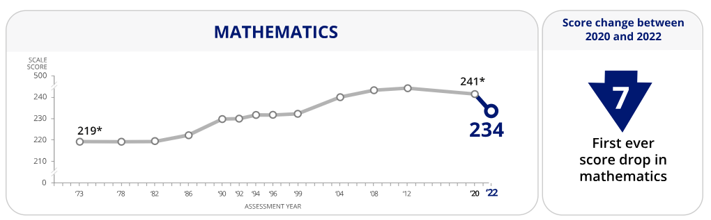

The Math Recovery Project
Slowly Reversing the Impact of COVID-19 on Math

The pandemic left a massive gap in student learning, causing global mathematics scores to plunge by an average of 14 percent of a standard deviation. We saw this crisis firsthand in our own hallways when we discovered that a little over ⅓ of our school's middle schoolers were failing pre-algebra. To fight back, I joined forces with three peers to launch a targeted student tutoring program and this project is our mission to scale that support, close the COVID learning gap, and give every student the exact tools they need to master math with confidence.
